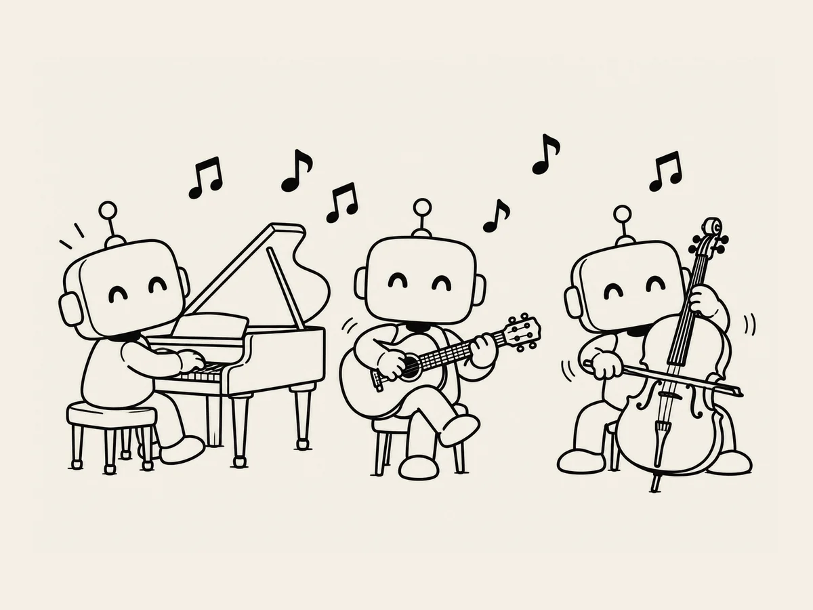

13.
ピアノ、ギター、チェロ……AI は楽器も扱えるんだ。
AI が作った子守歌を聴いていて、
気になった。
「君、
楽器も扱えるの？」
実際に楽器を演奏するのとは
少し違うけれど、
楽器の雰囲気を生かした音楽なら
作れるという。
「子守歌に合う楽器は？」
ピアノ。
ギター。
チェロ。
いろいろな楽器を挙げる。
「じゃあ、
ピアノを中心にした子守歌を作ってみて」
作った。
「ギターも」
また作った。
「チェロも」
またできた。
面白い。
3分くらいの曲なら、
数分で一曲できた。
そのまま作り続けた。
10曲。
20曲。
まとめて、
ずっと聴いてみた。
でも、
何か変だ。
楽器も変えたし、
いろいろ違うように頼んだのに、
半分くらいが
似たようなメロディーに聞こえる。
「ちょっと待って。
なんでみんな似てるんだ？」
続けて一気に作らせるのは、
あまりいい方法ではないようだった。
少し時間を置いて、
また作った。
聴いて、
捨てて、
また作った。
何曲作ったのかも、
よくわからなくなった。
たぶん、
30曲か40曲くらい
作ったと思う。
その中から、
13曲を選んだ。
作ったのは AI。
選ぶのは、
僕の仕事だった。
